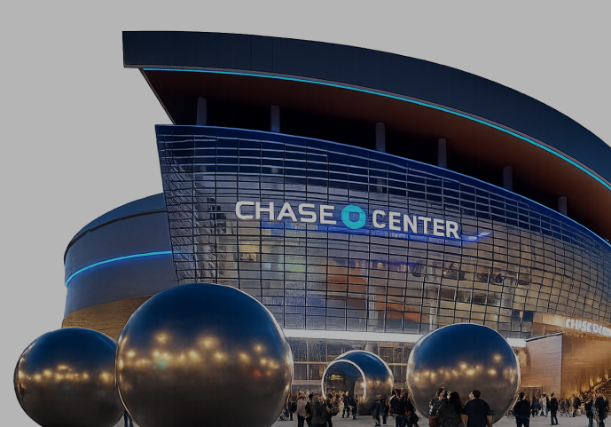

GSV vs MYSTICS
Join the Kodex team for an unforgettable night of basketball from Oracle Club Suite S23. Connect with fellow industry leaders, enjoy premium hospitality and exclusive suite access, and experience the electric atmosphere of Chase Center as the Golden State Valkyries take on the Washington Mystics. Great conversations, incredible views, and basketball await.
Get a PassEvent Timeline
Enjoy a VIP experience with exclusive suite access, premium hospitality, and an unforgettable night at the Chase Center.
5:30 PM
Doors Open
6:15 PM
Recommended Arrival
7:00 PM
Trade Off
Post Game
Suite Access Ends
Important Information
A few important details to help you make the most of your evening at Chase Center.
*Please note, no bags larger than 14"x6"x14" will be allowed inside the building. You can refer to the bag policy in the A-Z Guide linked above.
See You At Chase Centre
We look forward to spending the first night of TrustCon with you!
